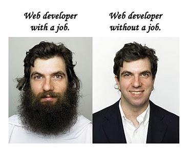

The best PHP framework you've never heard of (probably)
Tena Koutou
Who is this guy?
A web developer. First met Silverstripe in 2008 (v2.2), haven't really looked back much since.
 Nightjar
NightjarWhy SilverStripe?
- It's easy.
- Which means it makes me look good.
- Which means it's better than *XYZ.
Trust me.
This is pretty much my job
What is Silverstripe?
- A subtype of Bambusa multiplex
- Clumping & non invasive
- Great for privacy screens (hedges)
- A seldom searched term
What is Silverstripe?
- A company
- A great user friendly CMS
- A fantastic framework
Company you say?
- Founded in 2000 as Totally Digital
- Pre all the things
- Simple product ~2001/2, IE only
- Grew incrementally until CCK-ish
- Tried to be commercial product
- Dec. 2005 - Rewrite time!
Giving PHP what it needed
- 80% web pages, 20% custom dev
- Just a CMS not good enough
- MVC & DB abstraction
- Influenced by rails; active record
- Decided to Open Source a month before release
- v2 April 2007 - June 2012 (v2.4 May 2010 -> EOL March 2015)
Lessons learnt
- 3.0 released June 2012
- Major API overhaul
- New config system
- New CMS interface
- Lightened the core
- Framework & CMS decoupled properly
- 3.1 October 2013, 3.2 on horizon
One of the other latent goals of the system that really only came into its own in 3.0 was the idea that CMS is really just a way of managing a set of structured data. And that, whatever structure you create at the framework level, should be reflected in the CMS: a responsive UI in the sense of being responsive to the data structure
Why should I use it?
- Nothing beats it on (dev) speed. Get to go in no time.
- Clean code, easy to extend functionality
- Fantastic templates
- Not just for websites, framework only is the biz too
<sminnee> yeah. i mean, you can’t force someone to love you :p
- Well I'm here to try anyway.
How do I make it tick?
- Check all the prerequisites
- Drop files
- Config file
- Build, then flush
- ???
- Profit.
Stuff you need
- A web server with rewrite capabilities
- PHP (duh. Currently 5.3.3+), with required modules
- A large-ish memory limit
- Database server (MySQL by default)
Fetch the files
composer create-project silverstripe/installer ssisthewinRelease archives on website, or grab release (default) branch from Github
Config
_ss_environment.php
<?php
define('SS_ENVIRONMENT_TYPE', 'dev');
// These three define set the database connection details.
define('SS_DATABASE_SERVER', 'localhost');
define('SS_DATABASE_USERNAME', 'root');
define('SS_DATABASE_PASSWORD', 'password');
//Name the DB whatever the folder SS is installed into is named
define('SS_DATABASE_CHOOSE_NAME', 1);
//login on first run
define('SS_DEFAULT_ADMIN_USERNAME', 'user@host');
define('SS_DEFAULT_ADMIN_PASSWORD', 'password');
//CLI support!
global $_FILE_TO_URL_MAPPING;
$_FILE_TO_URL_MAPPING['/var/www'] = 'http://mysweetwebsite';
This file can sit outside the install root
(so long as it's in an ancestor)
Make the magic happen
http://domain.test/dev/build
http://domain.test/?flush=all
Build the manifest, build the database (where necessary), refresh the config, find & cache new template files
???
Build a theme? Write some code? Create the web.
Profit
Whatever it is you do to put pounds in your pocket.
The CMS is a pleaser
- It's the easiest I've ever encountered.
- Assets are stored on the files tab.
- Media embeds magically with oembed.
- Pages fit a type, defining the template to use.
- Easy for users to edit, hard to hash up.
The developer's CMS - a designer's friend
Code's Basic structure
- Everything is a module (including CMS and your site code).
- Modules are self contained (assets, etc).
- There's a hierarchy to it all (module, theme, project).
Ok, lets make something quicksmart
I know a guy who loves a dirty blog as a simple test. So lets do that.
The second tutorial sort of covers this. But we can do better.
Blog Page
mysite/code/BlogPage.php
<?php
class BlogPage extends Page {
private static $has_many = [
'Posts' => 'BlogPost'
];
public function getCMSFields() {
$fields = parent::getCMSFields();
$fields->addFieldToTab('Root.Main.Posts', GridField::create('Posts', 'Blog Posts', $this->Posts(), GridFieldConfig_RelationEditor::create()));
return $fields;
}
}
Guess which letter of MVC this is:
mysite/code/BlogPage.php
class BlogPage_Controller extends Page_Controller {
private static $allowed_actions = ['read'];
public function read() {
return ['Post'=>BlogPost::get()->byID($this->request->param('ID'))];
}
}
Blog object
mysite/code/BlogPost.php
<?php
class BlogPost extends DataObject {
private static $db = [
'Title' => 'Varchar(200)',
'Body' => 'HTMLText'
];
private static $has_one = [
'Author' => 'Member',
'Page' => 'BlogPage'
];
private static $default_sort = 'Created DESC';
}
Page Template
(themes/name | mysite) /templates/Layout/BlogPage.ss
<h1>$Title</h1>
<div class="content">$Content</div>
<ul class="posts">
<% loop Posts %>
<li class="post">
<h2><a href="{$Top.Link}read/$ID">$Title</a></h2>
<p>Written by $Author.Name on $Created.Nice</p>
<% if $Created != $LastEdited %>
<p><em>Updated: $LastEdited.Nice</em></p>
<% end_if %>
<p class="intro">$Body.FirstParagraph</p>
</li>
<% end_loop %>
</ul>
Post Template
(themes/name | mysite) /templates/Layout/BlogPage_read.ss
<% with Post %>
<h1>$Title</h1>
<p>Written by $Author.Name on $Created.Nice</p>
<% if $Created != $LastEdited %>
<p><em>Updated: $LastEdited.Nice</em></p>
<% end_if %>
<div class="content">$Body</div>
<% end_with %>
What about BlogPage?
Tables sort-of mimic inheritance via joins

Fix it fix it fix it
$fields->addFieldToTab('Root.Main.Posts', #...The docs tell me to remove '.Main'
$fields->addFieldToTab('Root.Posts', #...Where are my posts!?
We didn't flush the template cache yet...
http://localhost/ssisthewin/blog/?flush=1
Ok cool, it makes websites easy. What about proper development?
Developers wanna see the fun bits!
Magic includes
Has it's own inbuilt autoloader
Automagic caching
Advanced options for partial content caching
ORM of champions
Nothing quite like immutable null object pattern
Easy routing
Parametrise the URL
Form Fields
Encapsulation ftw
YAML configuration files
Declarative, kinda like JS plugins
Extensible without hacking
Can use Extension kinda like Laravel events
Dependency injection
::create all the things!
Permissions
can*()
OK, maybe I'll show you these briefly too
This is getting down the rabbit hole a bit
Lets...
- Make blog a module
- Add commenting support
- ... but without touching the module.
Modules
The $project folder is already a module...
From this
To this
Extension &
DataExtension
An underlay applied to a class to provide extra functionality or extend existing ones (appropriate hooks
$this->extend('funcName');First Make the comment model
<?php
class Comment extends DataObject {
private static $db = [
'Name' => 'Varchar',
'Email' => 'Varchar(100)',
'Comment' => 'Text'
];
private static $has_one = [
'Post' => 'BlogPost',
'Parent' => 'Comment'
];
private static $has_many = [
'Replies' => 'Comment'
];
}
'Dynamically' add method to BlogPost
<?php
class Comments extends DataExtension {
public function getComments() {
return Comment::get()->filter([
'ParentID' => 0,
'PostID' => $this->owner->ID
]);
}
}
Add things to the controller
<?php
class LeaveAComment extends Extension {
private static $allowed_actions = [
'Form'
];
public function Form() {
return Form::create(
$this->owner,
__FUNCTION__,
FieldList::create(
TextField::create('Name'),
EmailField::create('Email'),
TextareaField::create('Comment'),
HiddenField::create('PostID', null, $this->owner->getRequest()->param('ID')),
HiddenField::create('ParentID')
),
FieldList::create(
FormAction::create('doSubmit', 'Comment')
),
RequiredFields::create('Name', 'Email', 'Comment')
);
}
public function doSubmit($data, $form) {
$comment = Comment::create();
$form->saveInto($comment);
$comment->PostID = $this->owner->ID;
$comment->write();
$this->owner->redirectBack();
}
}
and modify the templates...
and edit the config
Gonna to to code for this part :)
Want to know more?
Of course you do.
Silverstripe Europe Conf
PanEuropean meetup silverstripe-europe.org
3rd & 4th Oct 2014 in Linz, Austria.
Free! Register at Meetup.com
CEO of SilverStripe will be attending, and there are intro workshops scheduled too.